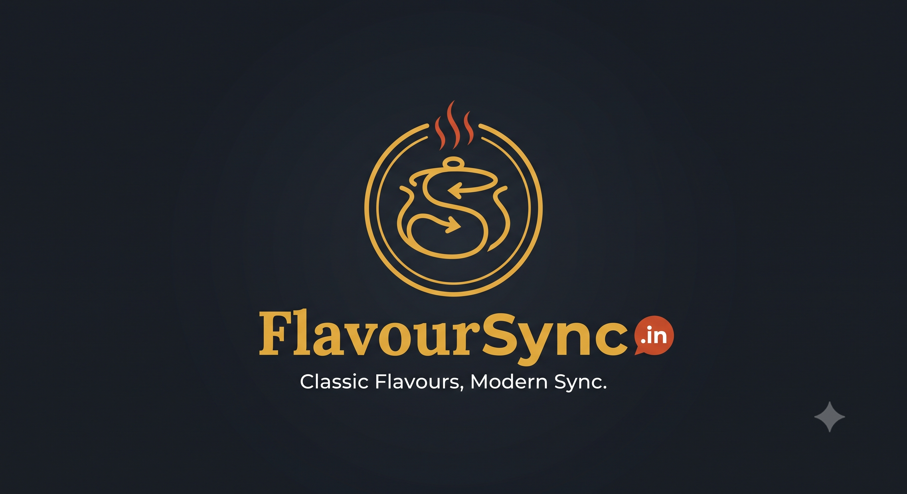

About Us
Built for people who want proper food without ordering friction.
FlavourSync.in is a delivery-first kitchen centered on classic Indian flavours, practical ordering and dependable packaging.

Our Purpose
A tighter menu, a clearer kitchen rhythm and meals that travel well.
Instead of presenting endless dishes, FlavourSync focuses on meals customers can understand quickly: hearty platters, rice bowls, veg thalis, kebab boxes and planned group orders.
Brand Values
What the kitchen stands for
Recipe discipline
Core dishes should taste familiar each time, with controlled spice levels and repeatable preparation.
Timing clarity
Customers should know whether they are ordering now, scheduling ahead or planning a bulk meal.
Delivery-first packing
The site communicates that packaging is part of the food experience, not an afterthought.
Human confirmation
WhatsApp confirmation keeps the first version lightweight while still giving customers direct support.
Go deeper
Read the FlavourSync story.
The story page explains the cooking approach, delivery process and how the brand keeps classic flavours in sync with modern ordering.
Open Story Page